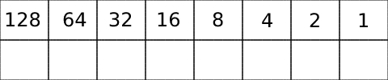
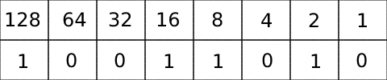
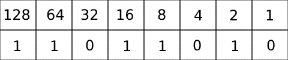
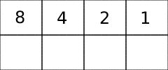
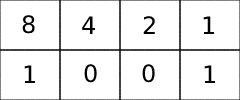
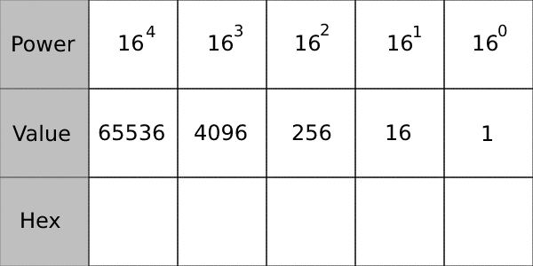
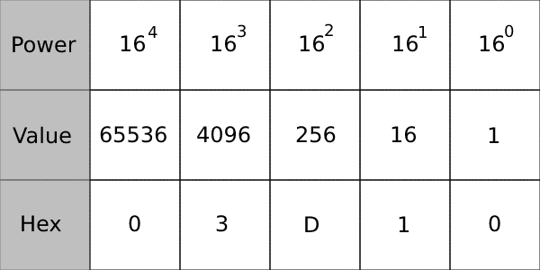
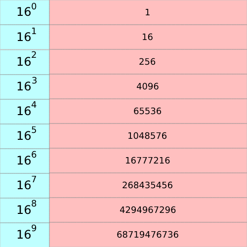
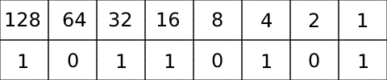
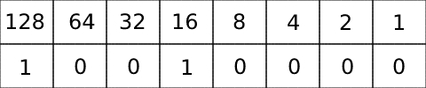

Decimal is known as base 10 and represented with a 10 at the end of
the number (123410)Binary is known as base 2 and represented with a 2 at the end of the number
(10112) Hexadecimal is known as base 16 and represented with a 16 at the end of the
number (A3CB16)
Binary: 1, 0
Deciaml: 1 - 9
Hexadecimal: A (10), B (11), C (12), D (13), E (14) and F(15)
Here is a quick video that explains the basics in more detail:
Logical Operators
AND
The AND operator compares two binary numbers and will return a 1 if both numbers are 1 and a
0 if one or both numbers are 0
Example:
10101101
10010101
Answer: 10000101
OR
The OR operator compares two binary numbers and will return a 1 if either number is a 1. It
will only return a 0 if both numbers are 0
Example:
01100011
10101010
Answer: 11101011
XOR
The XOR operator compares two binary numbers and will return a 1 if the numbers are
different and a 0 if they are the same
Example:
10100011
11011010
Answer: 01111001
NOT
The NOT operator is the simplest operator and only returns the opposite number
Example:
10101001
Answer: 01010110
Number Conversion
Decimal to Binary
To convert from decimal to binary you need to use a table like this:

To get the binary number you need to take your decimal number and try to fit it into the table.
Example: Decimal number: 154
To start you try to subtract the first number in the table 128 from 154 (154 – 128 = 26), if
you can you add a 1 under 128 and move on to the next number, 64. Since you cannot subtract
64 from 26 you place a zero under 64 and move on down the table putting zeros under each
number you cannot subtract from 26 and adding a 1 from each you can.
Once you finish the table it should look like this:

Using the table we can see that 154 represented in binary is 100110102
Binary to Decimal
To convert from binary to decimal can be done using the same table as before when going from decimal to binary:
For this example the binary number is 110110102 We can add the binary number into the table like so:

We can then go from left to right and add the numbers together that have a one underneath them.
128 + 64 + 16 + 8 + 2 = 218 The answer is 21810
Binary to Hexadecimal
To convert from binary to hexadecimal you can break the binary number into chunks of 4 and then convert each chunk into hexadecimal
We can use 1001 1110 0011 10102 as an example
Using this table we can enter the get the hexadecimal number:

To start we can change 1001 into by adding it to the table like so:

As you can see where the 1s are we can add that number so this one would be 9 since there is a 1 under 8 and the 1.
We can then do the same for the other 3 chunks which works out to:
1110 = 14 (E)
0011 = 3
1010 = 10 (A)
So 1001 1110 0011 10102 in hexadecimal is 9E3A16
Hexadecimal to Binary
Going from Hexadecimal to binary is the same as going from binary to hexadecimal Separating each digit out and converting to binary is how you can do it
As an example, we can use 4A316
We know that: 4 = 4 A = 10 3 = 3
So we can use the same table as before to add each number to get the binary value:
Adding 4 to the table gives us 0100 Doing the same for the other two numbers gives us: A = 1010 3 = 0011 Putting each chunk together we get:0100 1010 00112
Decimal to Hexadecimal
To convert from decimal to hexadecimal you can use a table like this:

If you start with a decimal number of 1563210 You can try to fit the number into the table similar to how converting from Decimal to binary works.
You cannot take 65536 from 15632 so that would be 0 You can take 4096 away from 15632 3 times leaving you with 3344. We can now add 3 under the 4096 column
Next we see if we can take 256 away from 3344, we can and it can be done 13 times leaving 16 We then put a D (13 in hexadecimal) under the 256 column
Next step is to try to take away 16 from 16 which can be done one time and leaves 0 We can then put a one under 16 and a 0 under 1.
Once you have done all the steps the table should look like this:

Using the table we can see that 15632 in hexadecimal is 3D1016
Hexadecimal to Decimal
To convert from hexadecimal to decimal is more difficult that going from decimal to hexadecimal.
You need to multiply the hexadecimal in powers of sixteen
Here is a table of the powers of sixteen, it has all the way up to 169 but you won’t need over 164

As an example we can use C4D316
You need to start from the right so the first number will be 3 and we can multiply it with 160 which is 0
3 x 0 = 3,
We can then do the same for the rest of the numbers
D (13) x 161 (16) = 208
4 x 162 (256) = 1024
C (12) x 163 (4096) = 49152
Now that we have multiplied the numbers, we can add them together to get the decimal number
3 + 208 + 1024 + 49152 = 50387
So C4D316 converted to decimal is 5038710
Addition & Subtraction with Number Systems
Addition With Binary
To add two binary numbers together involves a few rules:
0 + 0 = 0
0 + 1 = 1
1 + 1 = 0 (The 1 is carried to the next number)
1 + 1 + 1 = 1 (The 1 is carried to the next number)
As an example, we can use:
1111 0000 +
1011 0110
You start from the right so the first one will be 0 + 0 = 0
The next steps are:
0 + 1 = 1
0 + 1 = 1
0 + 0 = 0
1 + 1 = 0 (The one will be carried to the next number)
1 + 1 + 1 = 1 (The one is again carried to the next number)
1 + 0 + 1 = 0 (The one is again carried to the next number)
1 + 1 + 1 = 1 (The one is again carried to the next number)
1 (The one is carried over and will be added to the start of the number)
The answer is:
11010 01102
Subtraction With Bindary
Subtracting two binary numbers can be confusing so the easiest method is to first convert the numbers into decimal, subtract them then convert the answer back into binary
We can use this table to convert the binary to decimal:
As an example, we can use
10110101 – 00100101
To convert the first number into decimal using the table is the same as before, put each digit into the table and then add the numbers that have 1s under them

We can see that the first number comes to:
128 + 32 + 16 + 4 + 1 = 181
The second number following the same method is:
32 + 4 + 1 = 37
Now we can subtract the two decimal numbers from each other:
182 – 37 = 144
Now we can use the same table and convert 144 back into binary:

Now that we have converted it back to binary we now know the answer is:
1001 00002
Addition With Hexadecimal
Adding two hexadecimal numbers together is like adding decimal numbers together but unlike decimal where you need to carry a one after reaching 10, you carry a one after reaching 16.
As an example, we can add:
784
+ BDA
Just like decimal we start with the right most digits and, in this case its 4 + A
4 + A (10)
= 14 (E)
Next, we can add the 8 and D
= 21 (Since we can’t go higher than 16 we need to subtract 16 from 21 to get the answer and carry a 1 to the next part)
21 – 16 = 5
Lastly, we can do 7 + B not forgetting to add the one from the last part
19 – 16 = 3
Now all we need to do is to combine the Bold and underlined answers plus the carried one to get the final answer:
135E16
Subtraction with Hexadecimal
Subtracting with hexadecimal is again like subtracting with decimal but instead of borrowing in 10s we borrow in 16s.
As an example, we can subtract:
7E5E
- 471
Just like decimal we go from right to left so the first step is E – 1
E – 1
= 14 – 1
= 13 (D)
Next, we can do 5 -7, Which we can’t do so this is where we borrow from the next number. The next number is E which will become D and bring 16 to the 5 turning it into 21.
5 – 7
= 5 + 16 = 21
= 21 – 7 = 14
=14 (E)
The next one is now different because we borrowed from it, the E is now D so the new sum will be D - 4
= 13 – 4 = 9
Lastly the 7 doesn’t have anything being subtracted from it so it’s just 7